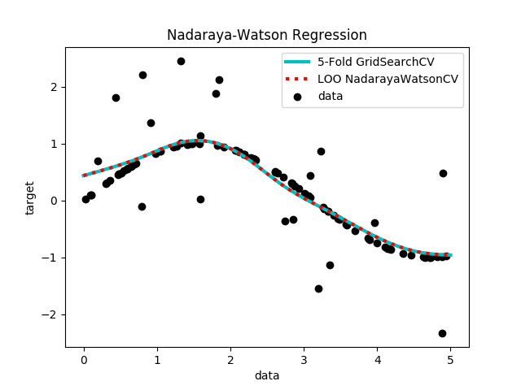

Nadaraya-Watson Regression¶
Note
This example is in part a copy of plot_kernel_ridge_regressions by
Jan Hendrik Metzen found in the package Scikit-Learn.
Nadaraya-Watos (NW) regression learns a non-linear function by using a kernel- weighted average of the data. Fitting NW can be done in closed-form and is typically very fast. However, the learned model is non-sparse and thus suffers at prediction-time.
TALK ABOUT EFFICIENT LOOCV!!
This example illustrates NW on an artificial dataset, which consists of a sinusoidal target function and strong noise added to every fifth datapoint.
Out:
GridSearchCV 5 fold cross validation fitted in 0.11 s
optimal bandwidth found: 3.16
NadarayaWatsonCV leave-one-out cross validation fitted in 0.01 s
optimal bandwidth found: 3.162
# Authors: Joseph Knox <josephk@alleninstitute.org>
# License: Allen Institute Software License
# NOTE: modified from plot_kernel_ridge_regression.py by Jan Hendrik Metzen
# from the package Scikit-Learn licensed under the 3 clause BSD License
# reproduced below:
#
# New BSD License
#
# Copyright (c) 2007–2018 The scikit-learn developers.
# All rights reserved.
#
#
# Redistribution and use in source and binary forms, with or without
# modification, are permitted provided that the following conditions are met:
#
# a. Redistributions of source code must retain the above copyright notice,
# this list of conditions and the following disclaimer.
# b. Redistributions in binary form must reproduce the above copyright
# notice, this list of conditions and the following disclaimer in the
# documentation and/or other materials provided with the distribution.
# c. Neither the name of the Scikit-learn Developers nor the names of
# its contributors may be used to endorse or promote products
# derived from this software without specific prior written
# permission.
#
#
# THIS SOFTWARE IS PROVIDED BY THE COPYRIGHT HOLDERS AND CONTRIBUTORS "AS IS"
# AND ANY EXPRESS OR IMPLIED WARRANTIES, INCLUDING, BUT NOT LIMITED TO, THE
# IMPLIED WARRANTIES OF MERCHANTABILITY AND FITNESS FOR A PARTICULAR PURPOSE
# ARE DISCLAIMED. IN NO EVENT SHALL THE REGENTS OR CONTRIBUTORS BE LIABLE FOR
# ANY DIRECT, INDIRECT, INCIDENTAL, SPECIAL, EXEMPLARY, OR CONSEQUENTIAL
# DAMAGES (INCLUDING, BUT NOT LIMITED TO, PROCUREMENT OF SUBSTITUTE GOODS OR
# SERVICES; LOSS OF USE, DATA, OR PROFITS; OR BUSINESS INTERRUPTION) HOWEVER
# CAUSED AND ON ANY THEORY OF LIABILITY, WHETHER IN CONTRACT, STRICT
# LIABILITY, OR TORT (INCLUDING NEGLIGENCE OR OTHERWISE) ARISING IN ANY WAY
# OUT OF THE USE OF THIS SOFTWARE, EVEN IF ADVISED OF THE POSSIBILITY OF SUCH
# DAMAGE.
from __future__ import division, print_function
import time
import numpy as np
import matplotlib.pyplot as plt
from sklearn.model_selection import GridSearchCV
from mcmodels.regressors import NadarayaWatson, NadarayaWatsonCV
print(__doc__)
rng = np.random.RandomState(0)
# #############################################################################
# Generate sample data
X = 5 * rng.rand(10000, 1)
y = np.sin(X).ravel()
# Add noise to targets
y[::5] += 3 * (0.5 - rng.rand(X.shape[0] // 5))
X_plot = np.linspace(0, 5, 1e3)[:, None]
# #############################################################################
# Fit regression model
train_size = 100
param_grid=dict(kernel=["rbf"], gamma=np.logspace(-2, 2, 25))
nw_gs = GridSearchCV(NadarayaWatson(), cv=5, param_grid=param_grid)
nw_cv = NadarayaWatsonCV(param_grid)
# fit 5-fold using GridSearch
t0 = time.time()
nw_gs.fit(X[:train_size], y[:train_size])
gs_fit = time.time() - t0
print("GridSearchCV 5 fold cross validation fitted in %.2f s" % gs_fit)
print("\toptimal bandwidth found: %.2f" % nw_gs.best_estimator_.gamma)
# fit leave-one-out using NadarayaWatsonCV
t0 = time.time()
nw_cv.fit(X[:train_size], y[:train_size])
cv_fit = time.time() - t0
print("NadarayaWatsonCV leave-one-out cross validation fitted in %.2f s" % cv_fit)
print("\toptimal bandwidth found: %.3f" % nw_cv.gamma)
# predict
y_gs = nw_gs.predict(X_plot)
y_cv = nw_cv.predict(X_plot)
# #############################################################################
# Look at the results
plt.scatter(X[:100], y[:100], c='k', label='data', zorder=1,
edgecolors=(0, 0, 0))
plt.plot(X_plot, y_gs, 'c-', lw=3, label='5-Fold GridSearchCV')
plt.plot(X_plot, y_cv, 'r:', lw=3, label='LOO NadarayaWatsonCV')
plt.xlabel('data')
plt.ylabel('target')
plt.title('Nadaraya-Watson Regression')
plt.legend()
plt.show()
Total running time of the script: ( 0 minutes 0.146 seconds)